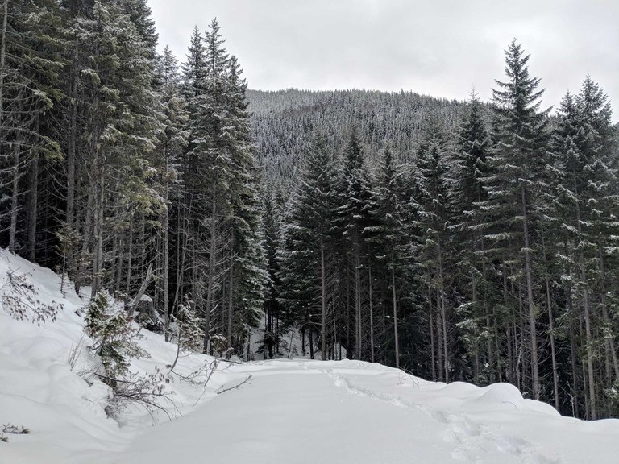

Random Encounter:
Enna, with her plantlike body and kind demeanor, was never suited for fighting except as a last resort. When she did, however, it was with the power of nature itself. Few can wield the wrath of the sun and earth quite like her.
When the rebellion came, the land was cursed. Genius cast a blight upon the forests to starve out the rebellion, and while it aided in the subjugation of the masses, those who remained loyal found themselves without a source of food. Desperate to save her children, Enna resorted to equally desperate measures...
Enna's grove maintains the last semblance of worship for Voras, who rests within the tower. With Enna gone, Voras will be weakened - but being cut off from her worshippers will cause her to roam the City and Wilds to find those responsible.
